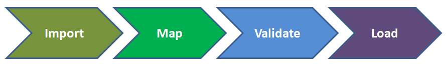

Penjelasan Singkat Model Informasi SDMX
Cakupan Permasalahan
Pernyataan Masalah Secara Singkat
Suatu sistem statistik terdiri dari banyak sub sistem dan komponen. Persoalan utama sistem komputer termasuk sistem statistik adalah sistem —atau dapat disebut perangkat lunak— dibangun secara silo atau setidaknya dibangun dengan komponen yang tidak independen dan tidak dapat digunakan kembali.
Pertimbangkan alur proses sederhana berikut ini, yaitu alur impor data ke basis data dan alur diseminasi data.
Alur Impor Data
Alur Diseminasi Data
Berikut adalah beberapa kelemahan yang kemungkinan terdapat di dalam sistem yang saat ini mendukung proses tersebut.
Desain Basis Data
Skema basis data dirancang secara internal sehingga dapat menampung semua data yang dikerjakan di dalam suatu departemen (selanjutnya akan disebut institusi). Institusi dapat memutuskan untuk mengadopsi basis data Oracle, dan tabel basis data disesuaikan untuk menyimpan data spesifik yang relevan sesuai dengan cakupan tempat institusi bekerja. Tidak perlu menggunakan lebih dari 2 bahasa, setiap tabel berisi label khusus untuk setiap bahasa di mana pun data tersebut muncul.
Ada satu tabel basis data yang besar berisi nilai observasi untuk setiap dataset. Ada banyak tabel basis data terkait yang berisi informasi lebih lanjut tentang pengamatan. Tabel tertaut digunakan untuk memfasilitasi pemfilteran saat membuat kueri basis data. Data dan informasi di dalam tabel tersebut berguna untuk menyusun hasil kueri yang akan disajikan kepada pengguna.
Impor Data
Institusi menerima data dari banyak penyedia data lain, dan dengan demikian format data di setiap dataset bergantung pada si pengirim data. Pengimpor data dicatat untuk mendukung dokumentasi ketika terdapat penawaran data. Dalam beberapa situasi, tabel pemetaan perlu didefinisikan untuk memetakan klasifikasi pengguna data ke pemetaan yang digunakan di internal institusi. Terdapat suatu aturan validasi yang ditetapkan untuk memastikan data sesuai dengan apa yang diharapkan. Setiap importir mengimplementasikan logika validasinya sendiri. Terdapat juga validasi tambahan yang digunakan setelah data berada di dalam basis data.
Diseminasi Data
Untuk melakukan diseminasi data, tim analisis bisnis menentukan jenis kueri mana yang diperlukan. Kemudian, tim developer menulis kueri basis data untuk mendefinisikan use cases. Use cases yang didefinisikan memiliki output untuk mengekstrak dataset yang relevan. Tidak ada model yang baku untuk data, sehingga output sintaks bergantung pada penerima data. Jika pengguna data memerlukan format output yang berbeda, tim developer akan menulis kueri basis data baru atau menulis transformasi dari format yang sudah ada.
Situs web dibangun di atas API yang ditentukan oleh tim analisis bisnis, dengan desainer web dan developer backend bekerja sama untuk membangun halaman web. Semakin banyak use cases yang berkembang, tim developer akan menulis API baru untuk mendukung situs web.
Secara internal, unit lain di dalam institusi diberikan akses langsung ke tabel basis data. Unit-unit tersebut menulis logika kueri mereka sendiri berdasarkan struktur tabel untuk mendapatkan data dari sistem mereka sendiri.
Pemeliharaan Sistem
Sistem ini menggabungkan kedua data, termasuk metadata yang diperlukan untuk memahami data. Aplikasi internal dibangun untuk memberi akses pengguna ke informasi pencarian seperti klasifikasi. Pengguna lain juga diizinkan untuk memodifikasi dan menambahkan informasi.
Dalam beberapa situasi, tidak ada antarmuka pengguna untuk jenis informasi tertentu, sehingga pengguna harus menggunakan kueri untuk mengakses basis data secara langsung. Dalam beberapa kasus, satu-satunya cara untuk memodifikasi jenis metadata tertentu adalah dengan memodifikasi basis data secara langsung.
Apa yang Salah dengan Pendekatan Ini?
Pendekatan ini memberikan contoh yang baik dari sistem yang sangat memiliki ketergantungan satu dengan yang lain di hampir setiap titik. Sistem yang tidak independen berarti bahwa mengubah satu aspek sistem memiliki dampak di seluruh sistem secara keseluruhan. Sistem yang saling memiliki ketergantungan memiliki ketahanan yang rendah untuk berubah dan biaya pemeliharaan yang tinggi dalam hal waktu dan uang.
Contoh pertama dari tingkat ketergantungan yang tinggi adalah skema basis data itu sendiri, yang desainnya digabungkan dengan dataset dan use cases pada saat melakukan desain. Setiap perubahan skema akan berdampak pada situs web, semua output untuk setiap pengguna data, dan karena basis data ini ditanyakan oleh unit lain, itu juga akan mempengaruhi semua pengguna data internal. Pengguna data internal juga dihubungkan ke platform Oracle.
Backend API digabungkan sesuai persyaratan situs web dan aplikasi maintenance yang ada. Karena kueri basis data telah dibangun untuk melayani API ini, kueri tersebut juga digabungkan sesuai dengan persyaratan. Karena situs web dibangun dengan langsung memanggil backend API, situs web digabungkan sesuai dengan bahasa pemrograman tempat sistem dibangun. Setiap perubahan terhadap persyaratan berdampak pada API tersebut dan setiap perubahan pada API memengaruhi situs web.
Tiap data dari subject matter (importir data) digabungkan menjadi format yang sesuai dengan datanya masing-masing. Jika subject matter (klien) mengubah format data mereka, ini akan berdampak pada pemrosesan terhadap data subject matter tersebut. Tiap format yang memiliki logika impornya masing-masing dapat menghasilkan bugs di beberapa data subject matter yang tidak ada di tempat lain (data hanya dimiliki oleh satu subject matter tersebut). Hal ini akan mengarah pada high testing overhead karena terdapat sedikit logika yang digunakan bersama-sama di antara tiap-tiap subject matter. Ketika format impor yang baru diperlukan, maka beban pemeliharaan akan meningkat.
Tidak ada model internal yang dapat mengarahkan kueri ad hoc 1 untuk ditulis sesuai kebutuhan agar mendukung subject matter internal, subject matter eksternal, situs web, dan aplikasi maintenance. Hal ini menyebabkan banyak API memiliki duplikasi logika dari waktu ke waktu sehingga sebagian kode menjadi kurang terstruktur dan menghasilkan Spaghetti Code. Aplikasi menjadi lebih kompleks untuk di- maintenance dan jauh lebih rentan terhadap bugs. Hal tersebut disebabkan karena perubahan pada satu bagian aplikasi dapat memiliki dampak yang tidak diinginkan pada bagian aplikasi yang tampaknya tidak terkait.
Tidak ada ketentuan untuk mengubah platform basis data (DBMS). Jika suatu institusi lebih menyukai SQL Server daripada Oracle, maka akan ada beban pemeliharaan yang sangat besar untuk menyesuaikan semua logika kueri. Skrip migrasi perlu ditulis untuk memigrasikan data dan semua kode perangkat lunak perlu dimodifikasi.
Aplikasi yang dibangun untuk melihat dan memelihara metadata pendukung akan menjadi beban maintenance, termasuk DBMS dan desain basis data. Pengenalan jenis metadata baru atau memodifikasi metadata yang telah ada tidak hanya membutuhkan perubahan basis data, tetapi juga modifikasi pada aplikasi maintenance.
Tidak ada ketentuan untuk mendukung data yang memiliki cakupan baru. Jika suatu unit diminta untuk menyimpan jenis data baru, maka perubahan pada kode dan modifikasi basis data akan diperlukan. Karena tingkat ketergantungan di dalam sistem yang tinggi, perubahan ini membutuhkan banyak testing tambahan.
Kueri ke basis data membutuhkan banyak join tabel yang mengarah ke performa yang buruk. Karena situs web, aplikasi maintenance, subject matter eksternal dan internal digabung menjadi satu struktur tabel, tentu tidak mungkin untuk meningkatkan performa dengan mudah.
Apakah Ini Khas dan Akan Terus Terjadi?
Penjelasan sebelumnya mungkin melukiskan gambaran yang hampir apokaliptik tentang apa yang bisa terjadi dan kami tidak menyarankan situasi tersebut hadir dalam satu sistem. Kami telah mengamati semua aspek dalam sistem dan kami telah memberikan saran konsultasi tentang pendekatan berbasis model (SDMX).
Terdapat cara yang lain untuk merancang sistem yang digunakan untuk melakukan pengumpulan, pelaporan, diseminasi data dan metadata, serta integrasi dengan tools analisis data yang digunakan oleh organisasi. Cara tersebut adalah dengan menggunakan pendekatan berbasis model dan arsitektur komponen yang mendukung model.
- 1
Kueri ad hoc adalah kueri tunggal yang tidak disertakan dalam Stored Procedure dan tidak diparameterisasi atau disiapkan untuk tujuan secara umum. Contohnya:
var newSqlQuery = "SELECT * FROM table WHERE id = " + myId;